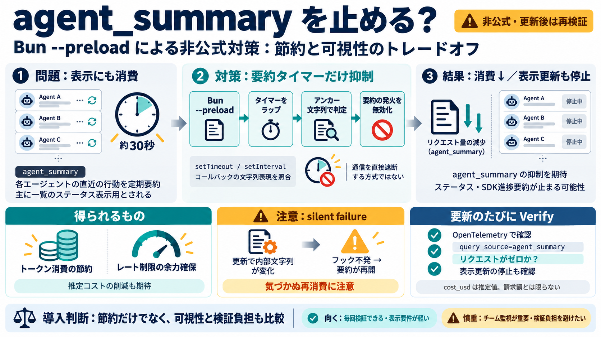

コストを効果的に管理する - Claude Code Docs
会話要約: `claude --resume` 機能の前の会話を要約するバックグラウンドジョブ コマンド処理: `/usage` などの一部のコマンドは、ステータスを確認するためにリクエストを生成する場合があります これらのバックグラウ…

会話要約: `claude --resume` 機能の前の会話を要約するバックグラウンドジョブ コマンド処理: `/usage` などの一部のコマンドは、ステータスを確認するためにリクエストを生成する場合があります これらのバックグラウ…
| `gen_ai.response.id` | `request_id` と同じ値。OpenTelemetry GenAI セマンティック規約 | | `client_request_id` | 最終試行のクライアント生成 `x-clie…
| What you get | SDK tracing | API tracing | Both together | --- --- | | Messages API requests | | | | | Session…
"gen_ai.agent.id": f"claude-code/{turn.user_msg.get('entrypoint') or 'cli'} ", "gen_ai.agent.version": turn.user_msg.ge…
微軟 Office 前負責人 Steven Sinofsky 更直言，「軟體已死」是荒謬判斷，正如行動互聯網時代 PC 軟體未被消滅，生態位置將重新調整。 在這場變革中，新的產業地圖正在浮現。數據顯示，採用 Claude 外掛程式的企業軟…